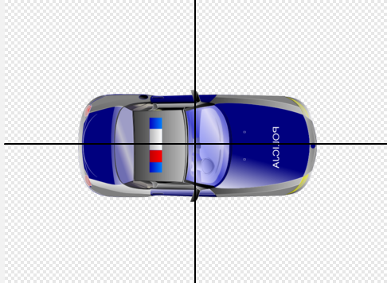
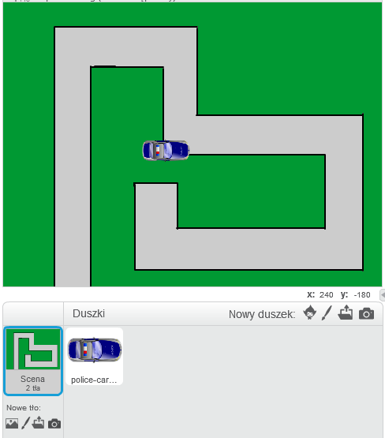
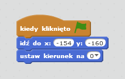
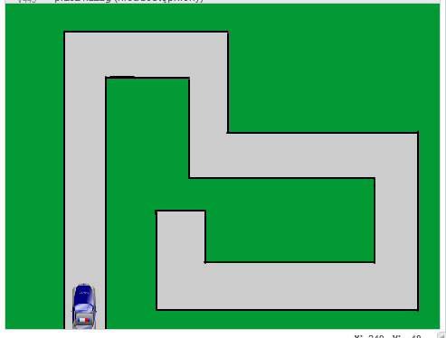
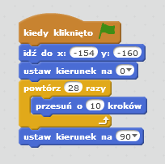
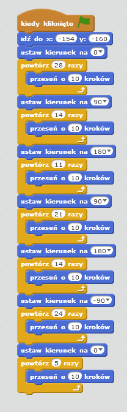
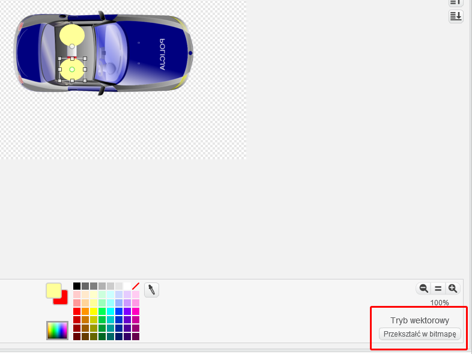
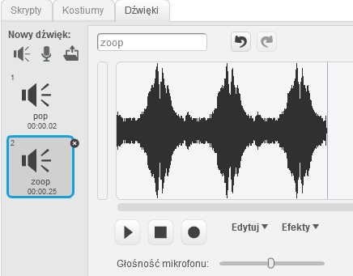
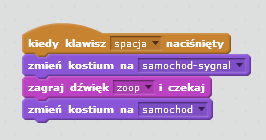
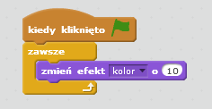

Wstęp
Nauczysz się jak zaprogramować własny pojazd tak, aby przejechał całą trasę!
Krok 1: Przygotuj duszka
Zadania do wykonania
-
Utwórz nowy projekt i nazwij go "Po sznurku do celu"
-
Dodajmy pojazd. Pobierz grafikę dla nowego duszka z tego miejsca.
-
Usuń duszka kota, który był od początku na scenie i dodaj nowego duszka wybierając opcję "Wczytaj duszka z pliku". Odszukaj pobrany wcześniej plik.
-
Przejdź do zakładki z kostiumami, ustaw kostium samochodu tak, żeby był zwrócony w prawę stronę i za pomocą opcji "Ustaw środek kostiumu" ustaw środek mniej więcej w centrum duszka, tak jak widać to poniżej:

Zapisz swój projekt
Krok 2: Przygotuj scenę
Zadania do wykonania
-
Musimy przygotować trasę dla samochodu. Użyj opcji "Namaluj nowe tło", aby przygotować grafikę drogi. Może ona wyglądać np. tak jak poniżej:

-
Czy Twój pojazd pasuje rozmiarem do Twojej sceny? Jeżeli nie, pomniejsz go tak, aby zmieścił się na trasie.
Zapisz swój projekt
Krok 3: W drogę!
Zadania do wykonania
-
Twój pojazd znajduje się teraz na środku sceny i jest zwrócony w prawą stronę. Nasza animacja będzie rozpoczynać się od kliknięcia w zieloną flagę. W tym momencie pojazd powinien ustawić się na początku trasy i obrócić we właściwym keirunku.
W tym celu dodaj następujące bloki i dopasuj wartości do Twojej trasy:

-
Teraz po kliknięciu w zieloną flagę samochód ustawi się na początku trasy, powinno to wyglądać mniej więcej w ten sposób:

-
Ok! Czas dodać animację ruchu pojazdu! Wykorzystasz do tego poznane wcześniej bloki pętli i bloki ruchu. Postaraj się dopasować ich wartości tak, żeby pojazd był w stanie przejechać całą trasę po kliknięciu we flagę.
Pierwszy etap trasy będzie się więc składał z bloku powtórzenia określoną ilość razy przemieszczenia pojazdu o określoną liczbę kroków. Te wartości dopasuj do swojej trasy. Na koniec obróć pojazd we właściwym kierunku.

-
Uf, pierwszy etap za nami. Czas dodać kod dla pozostałych etapów. Pojazd musi pokonać całą trasę!
Kod dla naszego przykładu wygląda tak jak poniżej, Twój będzie się pewnie nieznacznie od niego różnił, ponieważ Twoja trasa może być całkiem inna!

Zapisz swój projekt
Krok 4: Uwaga, policja jedzie!
Zadania do wykonania
W tym kroku dodamy w Twoim pojeździe możliwość wydawania dźwieków i migania światłami.
-
Dodaj nowy kostium (zduplikuj istniejący) dla Twojego pojazdu i przejdź w tryb wektorowy. Zmiana trybów odbywa się za pomocą opcji pokazanych poniżej:

-
Jeżeli nie wiesz, czym różni się tryb wektorowy od bitmapowego, zapytaj prowadzącego zajęcia.
-
Dodaj dwa żółte koła tak jak na rysunku powyżej, będą one odpowiedzialne za sygnały świetlne Twojego pojazdu.
-
Przejdź do zakładki z dźwiękami, dodaj nowy dźwięk z biblioteki dźwięków: "zoop".
-
Zduplikuj dźwięk kilkukrotnie, będzie to imitowało sygnał syreny radiowozu.

-
Chcemy, żeby samochód wydawał dźwięk i świecił światłami po naciśnięciu spacji. Wykorzystaj do tego znane Ci bloki kodu:

-
Czy wiesz, że każdy duszek może mieć wiele bloków kodu rozpoczynających się od tego samego zdarzenia? Dodajmy możliwość zmieniania koloru przez Twojego duszka podczas jazdy. W tym celu musisz dodać nowe bloki kodu, takie jak poniżej:
